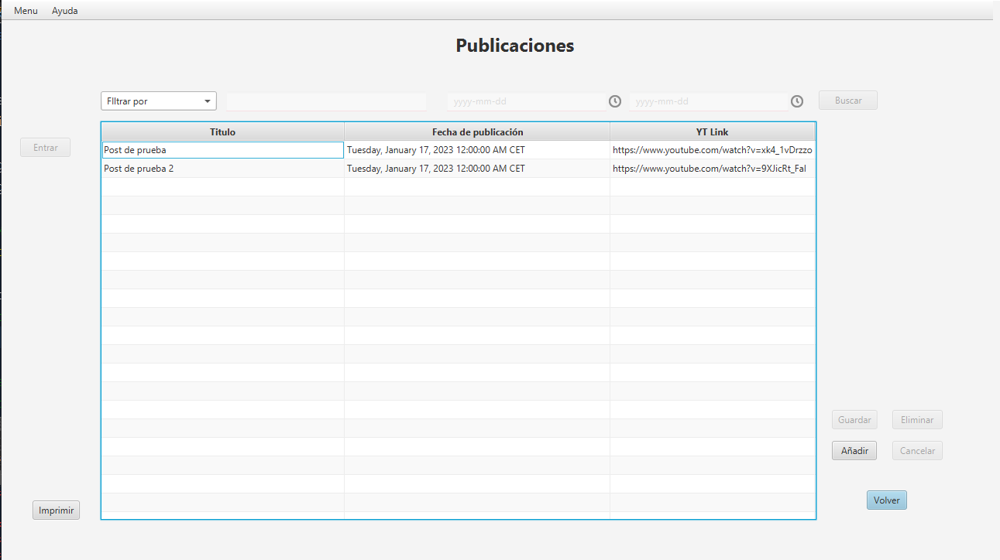

Esta ventana tendrá una tabla que mostrará todas las publicaciones que se encuentran en un curso, visualizando en las columnas los campos "Título", "Fecha de publicacion", "YT link"
Las celdas de la tabla son editables, por lo que si se hace doble click sobre una celda se activará el modo edición de la tabla.
En la parte superior de la tabla hay un combo box que nos permitirá seleccionar la manera de buscar publicaciones estas opciones són Nombre, Fecha, Rango Fecha. en la parte izquierda hay un botón para abrir la ventana del contenido del post, y an la parte izquierda abajo el botón de Imprimir creará un informe con los datos que se muestrán en la tabla.

Los botones "Entrar", "Guardar", "Eliminar", "Cancelar" y "Buscar" estarán desactivados al iniciar la ventana, y el botón de imprimir
se activará si la tabla tiene datos, y los botones de "Añadir" y "Volver" estarán siempre activados.
Al seleccionar una fila de la tabla el botón "Entrar" y "Eliminar" se habilitarán.
Si se hace cualquier modificación en la tabla los botones "Guardar" y "Cancelar" se habilitarán.
Si se hace doble click a una celda en una fila con una publicación (no se ha hecho doble click en la parte vacía de la tabla),
se activará el modo edición, en el caso de las columnas "Título" y "YT link", se mostrará un textfield donde podemos modificar
el contenido de esa celda, para aplicar los cambios con darle click fuera o enter se guardará los cambios en la tabla pero no en el servidor.
En el caso de la "Fecha de publicación" se mostrará un calendario donde se podrá especificar la fecha y la hora, para guardar
la nueva fecha hay que pulsar enter, y en este caso para salir de modo edición habrá que hacer click en una celda con datos, no
funciona si se le da click a la parte vacía de la tabla.